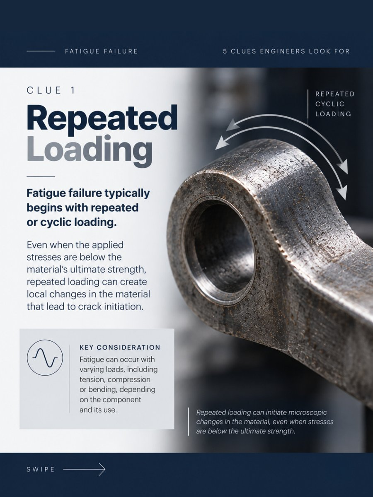
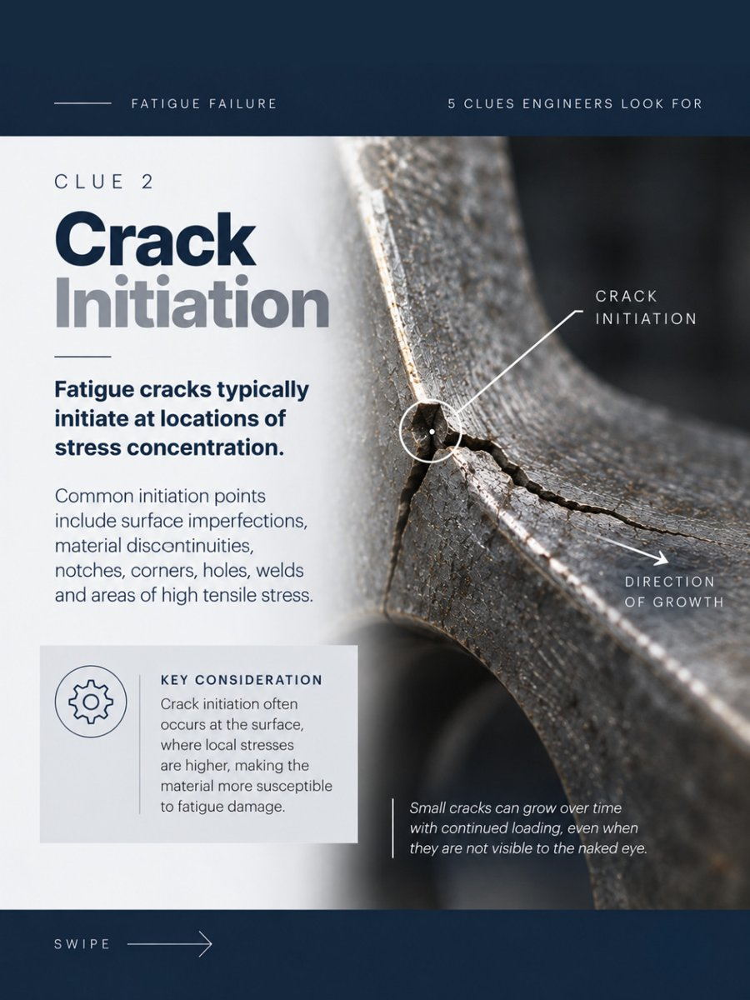
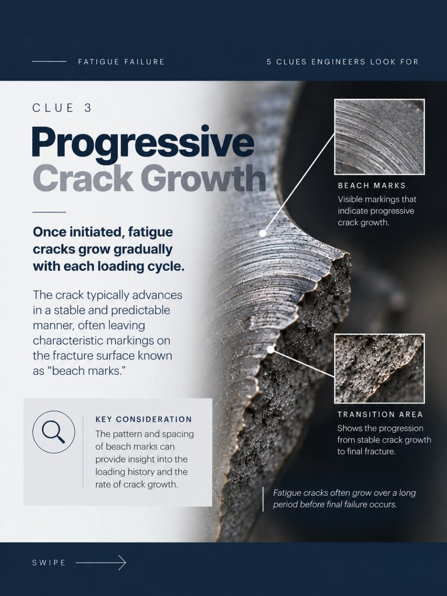
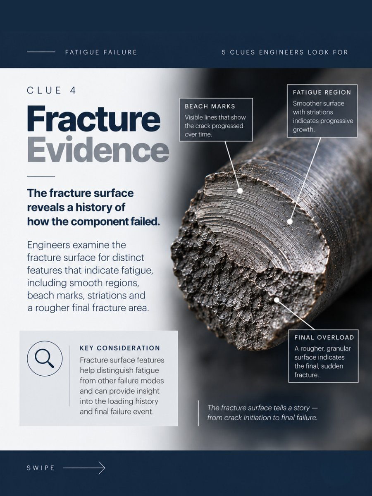
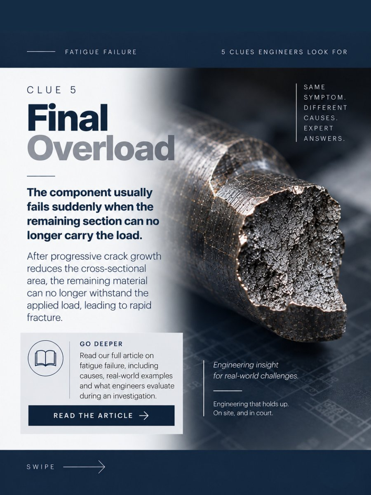

A component failed. The fracture may tell us why.
Fatigue failure develops over time — and the evidence left behind can help engineers reconstruct how the failure occurred. Unlike a single overload event, fatigue is progressive: repeated loading initiates a crack, the crack grows with each cycle, and the component finally fails when the remaining material can no longer carry the load.
In a forensic investigation, that history is written on the fracture surface. Here are five clues engineers look for when a component fails.
Clue 1 — Repeated Loading

Fatigue failure typically begins with repeated or cyclic loading. Even when the applied stresses are below the material’s ultimate strength, repeated loading can create local changes in the material that lead to crack initiation.
Key consideration: fatigue can occur with varying loads — including tension, compression, or bending — depending on the component and its use.
Clue 2 — Crack Initiation

Fatigue cracks typically initiate at locations of stress concentration. Common initiation points include surface imperfections, material discontinuities, notches, corners, holes, welds, and areas of high tensile stress.
Key consideration: crack initiation often occurs at the surface, where local stresses are higher — and small cracks can grow over time with continued loading even when they are not visible to the naked eye.
Clue 3 — Progressive Crack Growth

Once initiated, fatigue cracks grow gradually with each loading cycle. The crack typically advances in a stable and predictable manner, often leaving characteristic markings on the fracture surface known as “beach marks.”
Key consideration: the pattern and spacing of beach marks can provide insight into the loading history and the rate of crack growth. Fatigue cracks often grow over a long period before final failure occurs.
Clue 4 — Fracture Evidence

The fracture surface reveals a history of how the component failed. Engineers examine it for distinct features that indicate fatigue: smooth regions, beach marks, striations, and a rougher final fracture area.
- Beach marks — visible lines that show the crack progressed over time
- Fatigue region — smoother surface with striations indicating progressive growth
- Final overload — a rougher, granular surface marking the final, sudden fracture
Key consideration: fracture surface features help distinguish fatigue from other failure modes and can provide insight into the loading history and the final failure event.
Clue 5 — Final Overload

The component usually fails suddenly when the remaining section can no longer carry the load. After progressive crack growth reduces the cross-sectional area, the remaining material can no longer withstand the applied load, leading to rapid fracture.
Why This Matters in a Forensic Investigation
Same symptom, different causes — expert answers. A fractured component can result from fatigue, a single overload, a material defect, corrosion, improper installation, or a combination of factors. Determining which requires reading the physical evidence, understanding the loading history, and applying engineering principles — not assuming a conclusion.
At Trillas Consulting Engineers, our forensic practice evaluates component and structural failures for attorneys, carriers, and owners nationwide — with findings documented to stand up to scrutiny. Learn more about our forensic investigations, or read five questions to ask before retaining a forensic engineering expert.